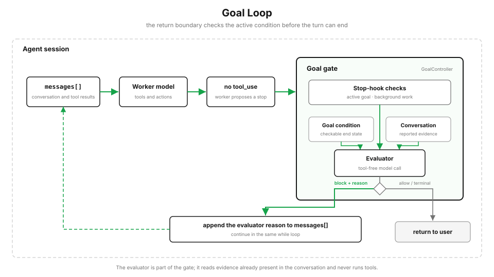

s17: Goal Loop：模型提出停止，独立判断器决定是否继续
s01 → ... → s15 → s16 → s17
“模型不再调用工具，只代表这一轮想停；目标是否完成，再交给一个独立判断器。”
Harness 层：持续执行。 在每轮结束处检查完成条件，没有完成就继续下一轮。

从 s01 开始，Agent Loop 的退出条件一直很简单：模型不再调用工具，程序就返回。
这对普通对话足够，但对“修到测试全部通过”“完成所有验收项”这样的任务还不够。模型可能认为已经做完，也可能只完成了一部分。没有新的 tool_use，只能说明当前轮次结束了，不能直接证明整个目标已经达成。
/goal 在真正返回之前，再加一次独立判断。
/goal 是一个会话级 Stop hook
输入：
/goal pytest tests/auth 退出码为 0，并且 lint 没有错误
程序保存完成条件，并立即把这段条件作为本轮任务交给主模型。用户不需要再输入一条“开始执行”。
当主模型不再调用工具时，主循环不会立刻 return，而是先运行 Goal Stop hook：
if tool_results:
messages.append({"role": "user", "content": tool_results})
continue
decision = await self.goal.evaluate_after_turn(self.messages)
if decision.action == "block":
self.messages.append({
"role": "user",
"content": decision.reason,
})
continue
return SessionResult(text=text, status=decision.action)
没有活跃目标时，这个 hook 直接放行，退出条件仍然和 s01 一样。
判断器和干活的模型分开
主模型负责修改代码、运行命令和解决问题。Goal 判断器是另一次独立的模型调用，只负责判断完成条件。
判断器由 GoalController 持有，是 Goal Gate 的内部依赖，不是主循环之外的另一条退出路径。
本课没有单独的 CommandQueue：判断未通过时，controller 把理由直接追加到同一份 messages[]，然后进入下一轮。更大的宿主可以用共享队列把用户输入、后台结果和继续命令送回会话，但那条队列服务的是整个宿主，只负责传递，不归 Goal Gate 所有。把它画进 Gate，会把"谁做决定"和"决定从哪条路送回来"混成一件事。
判断器会看到：
- 当前 Goal 的完成条件；
- 到目前为止的对话记录；
- 主模型运行工具后写回来的结果。
判断器没有工具，不能自己读取文件，也不能重新运行测试。它只能根据对话中已经出现的内容做判断：
{
"ok": false,
"reason": "对话中还没有出现 pytest 的退出码",
"impossible": false
}
ok=true 表示条件已经满足；ok=false 表示还要继续；如果目标已经无法完成，则返回 impossible=true。
对话记录就是判断依据
判断器读取当前对话。工具结果、主模型的说明和后台任务通知都会作为消息进入其中，最终判断取决于这些消息实际写了什么。
送给判断器的内容会保留最近的完整消息。如果最新一条消息本身过长，就只保留它的开头和结尾，避免一条工具结果占满整次判断请求。
这并不表示模型说一句“测试通过了”就一定会被接受。判断器的提示明确要求根据对话中的具体结果判断，不能把没有结果支撑的宣称当成完成。
但它终究只是一个只读对话的模型，可靠性取决于对话里有没有把关键结果说清楚。因此主模型的 system prompt 会要求：
运行验证命令后，把命令和结果明确写进对话，让独立判断器能够检查。
Goal Loop 不是测试框架。真正的验证仍然由工具执行，它只负责判断验证结果是否已经出现在当前工作记录中。
好的完成条件要能检查
“把代码弄好”太模糊，判断器不知道什么算好。
更合适的条件会写清三件事：
- 结束状态：最终要达到什么结果；
- 验证方式：用什么命令或输出证明；
- 限制条件：完成过程中不能破坏什么。
例如：
/goal 完成登录模块迁移，直到 pytest tests/auth 退出码为 0，
并且没有修改 tests/auth 之外的测试文件
如果想限制自动执行轮数，使用主循环的全局限制，而不是给 Goal 偷偷加一个固定预算：
MAX_TURNS=20 python s17_goal_loop/code.py \
"/goal 修复类型错误，直到 npm run typecheck 退出码为 0"
没完成，就回到同一个循环
判断器认为条件尚未满足时，会给出简短原因：
对话中还没有出现完整测试结果，请运行 pytest tests/auth 并报告退出码。
程序把原因加入 messages[]，然后在当前 while 循环里直接 continue。主模型立即开始下一轮，不需要用户再次输入“继续”。
这里没有单独的 continuation queue。Goal 检查就在主循环的结束位置，未满足时也从这里回到主循环。
后台任务没有结束时，先不要判断
Workflow、后台命令和其他异步任务可能在主模型结束当前轮时仍在运行。
这时立即判断通常没有意义，因为关键结果还没有回到对话。Goal Stop hook 返回 defer，保留当前 Goal，也不调用判断器。后台任务结束后，宿主把完成通知交给 submit_background_result()；通知进入同一个 messages[]，主循环再继续。
Workflow 完成通知没有机械上的特殊权限。它和其他消息一样进入对话，判断器根据其中的实际结果判断条件是否满足。
自动继续也必须有出口
Goal 本身没有一个默认的“最多 20 轮”。是否满足完成条件，由判断器每轮重新判断。
但任何自动机制都不能无限占住一次请求。本课在 Stop hook 外保留两道通用出口：
- 主循环的全局
max_turns； - Stop hook 连续阻止结束的次数上限。
达到上限时，程序把控制权还给用户，但不会把目标伪装成完成，也不会自动清除目标。用户可以查看状态、补充信息后继续，或者主动清除。
判断器调用失败时也采用同样原则：停止自动续轮，保留目标，并把错误交给用户，而不是在无法判断时宣称成功。
查看、替换和清除
每个会话同时只有一个活跃 Goal。
/goal
查看当前条件、已经判断的次数、经过时间、主 Agent 的 token 使用量和最近一次判断原因。
/goal 新的完成条件
直接替换旧 Goal，并立即按新条件开始工作。
/goal clear
清除当前 Goal。stop、off、reset、none 和 cancel 也可以作为清除别名。
GoalController.restore() 可以从宿主保存的 goal_status 事件中恢复仍然活跃的 Goal；本课的命令行入口不负责持久化整个会话。已经完成、失败或主动清除的 Goal 不会重新启动。恢复后保留完成条件，但重新计算轮数、时间和 token 使用量。
代码里新增了什么
这是一个以 S04 Kernel 为基础的独立机制示例。代码保留五个基础工具和四类 hook，再加入四个 Goal 相关部件：
| 部件 | 作用 |
|---|---|
GoalState |
保存条件、判断次数、开始时间和最近原因 |
PromptGoalEvaluator |
用一次独立模型调用读取对话并返回判断 |
GoalController |
设置、查看、清除 Goal，并实现 Stop hook |
AgentSession |
在原来的退出位置接入 Goal 判断 |
接入点只有几行：
decision = await self.goal.evaluate_after_turn(self.messages)
if decision.action == "block":
continue
return SessionResult(text=text, status=decision.action)
跑起来看看
先安装依赖并准备 .env：
pip install -r requirements.txt
# .env
ANTHROPIC_API_KEY=...
MODEL_ID=...
# 可选：给 Goal 判断器使用更小的模型
GOAL_EVALUATOR_MODEL_ID=...
进入交互模式：
python s17_goal_loop/code.py
然后输入：
/goal python -m pytest 退出码为 0
也可以直接从命令行设置 Goal：
python s17_goal_loop/code.py "/goal python -m pytest 退出码为 0"
与 s16 的关系
s16 解决“一批工作怎样执行”：哪些步骤并行，结果怎样验证，失败后怎样恢复。
s17 解决“整件事情是否已经完成”：即使 Workflow 已经结束，结果也可能还没有满足用户的最终要求。Workflow 的结果回到对话后，Goal 判断器再决定是结束还是继续工作。
两个机制可以单独使用。接到同一个宿主时，Workflow 的完成通知进入会话，Goal Loop 再决定整个任务是否还要继续。